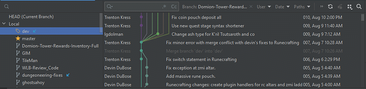
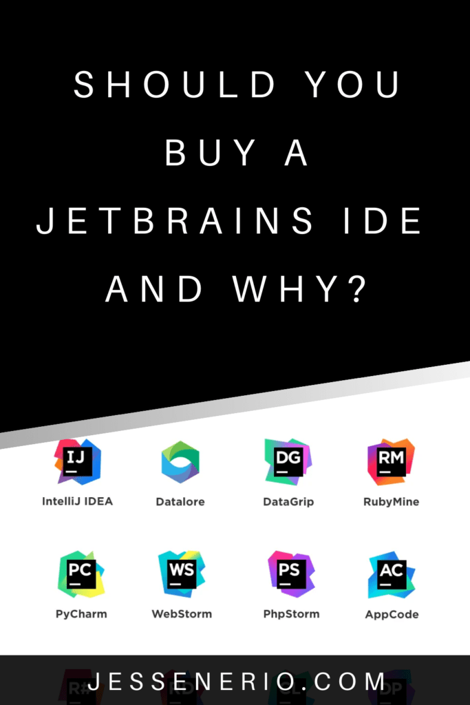

Changing IDEs can be very difficult for many programmers. It is really difficult to say whether or not an IDE is good until after using it for a while. Here I am showing you the reasons to use the IDE and the reasons not to use JetBrains. This way it is easier to make a choice of your own.
Why Should You Use JetBrains?
IDEs are supposed to help you code with ease and speed. The whole point of buying a premium IDE is to improve your coding workflow and productivity farther than the free IDEs. I believe, from my experience, JetBrains does a good job of enhancing a programmers experience with a language and framework beyond what is expected.
Given time JetBrains IDEs can spoil you and make it hard to accept other IDEs which are simply less intuitive. Visual Studio is a solid example of a less intuitive IDE against JetBrains.
Why Shouldn't You Use JetBrains?
It is premium. That is why you shouldn't use it. If you are not a student and have no open-source projects, you are literally shut out of the full features of the IDEs and would need to spend $100+/year. On top of this, you need a decent computer to run the IDE. So many other IDEs exist which are completely free and are much more speed/resource optimized.
Pros
#1 All JetBrains IDEs have the same formatting, hotkeys & extensions: This is the number 1 reason to use JetBrains. It doesn't matter what language, what framework or which JetBrains IDE. They all look the same, have the same hotkeys, and have equal placement of extensions. Learn one IDE and you learn them all.
#2 All JetBrains IDEs have THE BEST Git GUI: Although Git is best used with command line, the GUI here is phenomenal. Just take a look.
The above is the commit history. You can filter it by branch, user dates and tags. In addition the diff viewer is highly intuitive, the blame annotations are so easy to understand and JetBrains Git GUI handles multiple remotes, repositories and child repositories like a champ.
It is fully featured and much more powerful than say GitHub Desktop. It is even much more intuitive than Visual Studio Code's GitLens as well.
#3 JetBrains has an IDE specifically for databases: It is called DataGrip and it is just as good or better than MongoDB Compass and SQL GUI tools. The difference is that they are all in one, supporting both SQL & No-SQL databases. You can also switch databases very quickly or view both of them, mixing No-SQL views and SQL views under separate tabs.
#4 JetBrains has its own version of Python Notebooks: DataSpell is the IDE for using Python Notebooks. Simply put, it has many more features than Jupyter & Jupyter Lab, if you are interested in that type of thing.
Cons
#1 Jetbrains eats CPU/RAM resources like crazy: This is the number one reason not to use JetBrains. It is simply unoptimized. I have seen the IDE eat up 26GB of RAM and completely fill 4 processors for literally no reason. If you have a computer with low resources, Visual Studio Code is the way to go.
#2 Slow start-up time & slow compilation: Compared to Visual Studio Code, Eclipse and other lightweight IDEs, JetBrains is just ridiculously slow. The counter balance for this, is the easy integration of Jetbrains for specific languages.
For example Intellij is so well integrated with the Java language and its build tools it has no problem using them as expected.
#3 Not all languages are fully featured: C++ code sources, for example, are dominated by Visual Studio solutions. These are not supported by CLion. CLion uses primarily CMake/vcpkg which is a bit insufficient for a newer developer looking for a quick build of a C++ source.
I am sure there are many more examples of this, as I have encountered them in the past. But, when JetBrains does add a feature they do it right, you can count on that. I have always seen them add features better than what I could have imagined, definitely better than their competition.
#4 Expensive, JetBrains is ridiculously expensive: At this time it costs more than $100 per year. It is better to get a student license or open-source license.
What Are the Alternatives?
One of the best alternatives to JetBrains is Visual Studio Code. You can use it to code in ANY language and it is free, fast and uses low resources. The con behind it, is, it lacks the ability to deeply integrate with a language or tech stack.
For example, certain Gradle builds break the syntax and dependency checks in Visual Studio Code. Mixing languages and build tools in a stack tends to break Visual Studio Code in ways that don't happen in JetBrains IDEs.
Another alternative is language specific IDEs. My issue with this, is, you have to learn that IDE and each IDE afterward. At that point it might be better to go with one that is more like a text editor. Atom & Sublime are examples of this.
Conclusion
Using JetBrains is a personal choice. There are many reason to use it and not to use it. It really depends on your needs and resources. But just know it is premium for a reason.
Anywho, I hope you learned something
Happy Coding!
Resources
JetBrains: https://www.jetbrains.com/
Visual Studio Code: https://github.com/microsoft/vscode
